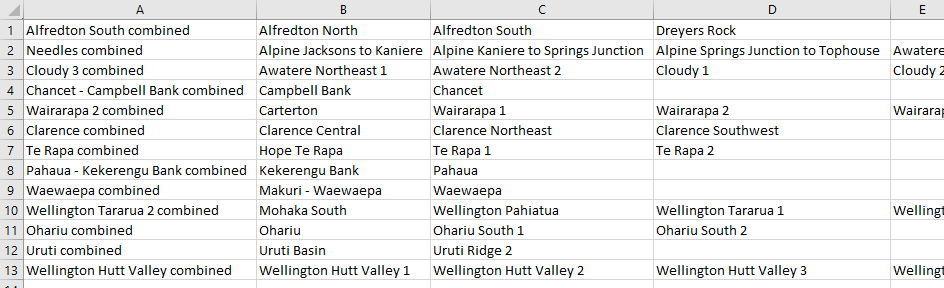
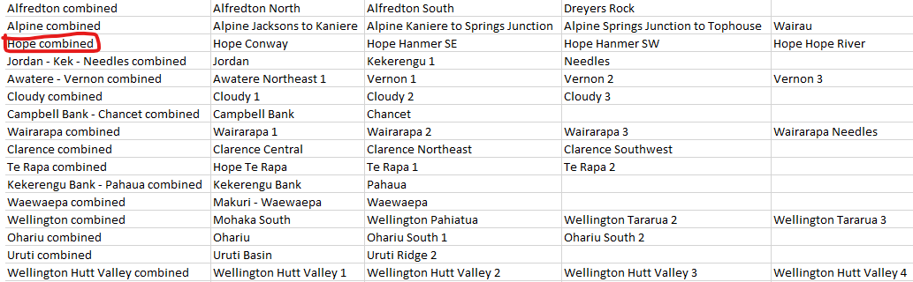
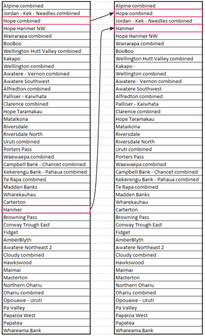

Defining connected fault systems (without smoothing)
This notebook demonstrates how to identify which fault segments in a shapefile should be connected up into large fault systems. It is identical to the standard workflow, except for a few added arguments for some commands. We recommend using smoothing unless you already have closely-spaced vertices in your input GIS data. This alternative workflow was implemented to accommodate a version of the NZ CFM with 1 km vertex spacing.
Reading in faults
First, you need to read in your GIS representation of faults. In this example, we use a subset of faults from the New Zealand Community Fault Model (Seebeck et al., 2022).
# Import modules
from fault_mesh.faults.leapfrog import LeapfrogMultiFault
import os
import numpy as np
import geopandas as gpd
# Set coordinate system (optional) EPSG code
# If not desired, set to None
epsg = 2193
# Read in fault data from shapefile
fault_data = LeapfrogMultiFault.from_nz_cfm_shp("tutorial_gis/cfm_gt_1_5.gpkg", remove_colons=True, epsg=epsg, smoothing_n=None)
# Alternative for full CFM:
# fault_data = LeapfrogMultiFault.from_nz_cfm_shp("../gis/NZ_CFM_v1_0_shapefile/NZ_CFM_v1_0.shp", remove_colons=True,
# exclude_aus=False, exclude_zero=False, exclude_region_min_sr=0.0)
# Alternative for different dip:
# fault_data = LeapfrogMultiFault.from_nz_cfm_shp("../gis/NZ_CFM_v1_0_shapefile/NZ_CFM_v1_0.shp", remove_colons=True,
# exclude_aus=False, exclude_zero=False, exclude_region_min_sr=0.0, dip)
---------------------------------------------------------------------------
AssertionError Traceback (most recent call last)
Cell In[1], line 11
9 epsg = 2193
10 # Read in fault data from shapefile
---> 11 fault_data = LeapfrogMultiFault.from_nz_cfm_shp("tutorial_gis/cfm_gt_1_5.gpkg", remove_colons=True, epsg=epsg, smoothing_n=None)
13 # Alternative for full CFM:
14 # fault_data = LeapfrogMultiFault.from_nz_cfm_shp("../gis/NZ_CFM_v1_0_shapefile/NZ_CFM_v1_0.shp", remove_colons=True,
15 # exclude_aus=False, exclude_zero=False, exclude_region_min_sr=0.0)
(...)
18 # fault_data = LeapfrogMultiFault.from_nz_cfm_shp("../gis/NZ_CFM_v1_0_shapefile/NZ_CFM_v1_0.shp", remove_colons=True,
19 # exclude_aus=False, exclude_zero=False, exclude_region_min_sr=0.0, dip)
File ~/miniconda3/envs/leapfrog-fault-models/lib/python3.10/site-packages/fault_mesh/faults/leapfrog.py:274, in LeapfrogMultiFault.from_nz_cfm_shp(cls, filename, exclude_region_polygons, depth_type, exclude_region_min_sr, include_names, exclude_aus, exclude_zero, sort_sr, remove_colons, smoothing_n, dip_choice, epsg, trimming_gradient, dip_multiplier, strike_multiplier, check_optional_fields)
266 @classmethod
267 def from_nz_cfm_shp(cls, filename: str, exclude_region_polygons: List[Polygon] = None, depth_type: str = "D90",
268 exclude_region_min_sr: float = 1.8, include_names: list = None, exclude_aus: bool = True,
(...)
271 trimming_gradient: float = 1., dip_multiplier: float = 1., strike_multiplier: float = 0.5,
272 check_optional_fields: bool = True):
--> 274 trimmed_fault_gdf = cls.gdf_from_nz_cfm_shp(filename=filename, exclude_region_polygons=exclude_region_polygons,
275 depth_type=depth_type, exclude_region_min_sr=exclude_region_min_sr,
276 include_names=include_names, exclude_aus=exclude_aus,
277 exclude_zero=exclude_zero)
278 multi_fault = cls(trimmed_fault_gdf, sort_sr=sort_sr,
279 remove_colons=remove_colons, smoothing_n=smoothing_n,
280 dip_choice=dip_choice, epsg=epsg, trimming_gradient=trimming_gradient,
281 dip_multiplier=dip_multiplier, strike_multiplier=strike_multiplier,
282 check_optional_fields=check_optional_fields)
284 return multi_fault
File ~/miniconda3/envs/leapfrog-fault-models/lib/python3.10/site-packages/fault_mesh/faults/generic.py:270, in GenericMultiFault.gdf_from_nz_cfm_shp(filename, exclude_region_polygons, depth_type, exclude_region_min_sr, include_names, exclude_aus, exclude_zero)
263 @staticmethod
264 def gdf_from_nz_cfm_shp(filename: str, exclude_region_polygons: List[Polygon] = None, depth_type: str = None,
265 exclude_region_min_sr: float = 1.8,
266 include_names: list = None, exclude_aus: bool = True, exclude_zero: bool = True):
267 """
268 Read CFM shapefile
269 """
--> 270 assert os.path.exists(filename)
271 fault_geodataframe = gpd.GeoDataFrame.from_file(filename)
273 # If appropriate, clip out data that fall within exclude_regions
AssertionError:
Finding connections between segments
Now your data are read in, you need to set the distance tolerance. This tolerance is the minimum horizontal distance between two fault traces that is allowed to count as a connection.
dist_tolerance = 200.
The next cell uses python module networkx to find segment traces that are within the specified distance tolerance of each other.
fault_data.find_connections(verbose=False)
Found 156 connections
Found 142 connections between segment ends
It is now necessary to write out these connections for manual editing and review. The file will be written out into the same directory as this Jupyter notebook. It will have a prefix supplied by you and the suffix “_suggested.csv”.
fault_data.suggest_fault_systems("central_gt1_5_connected")
This will create a CSV file that looks like this:

The name of the combined fault system is in the first column, and names of the faults that make up the connected system are in subsequent columns.
Making and incorporating manual edits
The automatically-generated fault system suggestions will (by design) include hyper-connected fault systems that need to be broken up. At this stage, the best way to break up these networks into smaller fault systems is to do it manually by editing the CSV file. An example below shows a new line added to the CSV representing the Hope Fault system – The Hope Fault is grouped with the Alpine and Kekerengu-Needles fault systems in the automatically-generated connections CSV. Make sure you save this new file with a different name to avoid overwriting it!

Once you have made the necessary edits, read your new CSV to overwite the automatically-generated connected fault systems:
fault_data.read_fault_systems("./define_connections_data/central_gt1_5_connected_edited.csv")
fault_data.generate_curated_faults()
Defining a cutting hierarchy
Now you have defined your fault system (which you will later use to create meshes), it is necessary to specify which faults terminate against other faults. For example, it seems highly likely that the western end of the Hope Fault is truncated at depth by the Alpine fault. This complex mesh cutting is best achieved using dedicated software such as leapfrog (see below), but for cutting to be done automatically, it is best to first specify a cutting hierarchy.
Suggesting a hierarchy based on slip rate
A first pass at a hierarchy can be generated based purely on fault slip rate. Assuming that the fault data you have already read in have slip rates associated with them, this first pass is easy to make:
fault_data.suggest_cutting_hierarchy("central_gt1_5_hierarchy")
This operation simply orders the faults (or fault systems) in your model in descending order of slip rate. For connected fault systems that have segments with different slip rates, the maximum slip rate of any segment in that fault system is used to place the fault system in the cutting hierarchy.
Editing the cutting hierarchy
You can then edit this hierarchy by switching the order of lines in the file. For any pair of faults/systems that intersect, the fault closer to the bottom of the file will terminate against the fault closer to the top of the list.
An example of a situation where editing is desirable is illustrated below. The maximum slip rate of the Jordan-Kekerengu-Needles Fault System (23 mm/yr) is faster than the corresponding maximum for the Hope Fault (15.8 mm/yr), but we wish to create a fault model where the Jordan Fault terminates against the Hope Fault. We effect this termination by moving Hope combined above Jordan - Kek - Needles combined in the CSV file. For similar reasons, we move the Hanmer Fault above Hope Hanmer NW.

We read in this new hierarchy as follows:
fault_data.read_cutting_hierarchy("./define_connections_data/central_gt1_5_hierarchy_edited.csv")
Create shapefiles for mesh creation
The final pre-meshing step is the creation of files that can be combined with meshing software to create triangular mesh representations of faults. Although it is possible to construct these triangular surfaces in multiple software packages (for example, MOVE 3D), the following discussion is geared towards use with Leapfrog Geo software.
Create directories to hold shapefiles
For organisational reasons, it helps to have the different shapefiles in different directories
for dir_name in ["depth_contours", "traces", "footprints", "footprints_lines"]:
if not os.path.exists(dir_name):
os.mkdir(dir_name)
Write out shapefiles
for fault in fault_data.curated_faults:
# Generate depth contours
fault.generate_depth_contours(np.arange(2000, 32000., 2000.), smoothing=False)
# Write contours to files
fault.contours.to_file(f"depth_contours/{fault.name}_contours.shp")
# Write traces
fault.nztm_trace_geoseries.to_file(f"traces/{fault.name}_trace.shp")
# Write fault footprints
for fault in reversed(fault_data.curated_faults):
fault.adjust_footprint()
fault.footprint_geoseries.to_file(f"footprints/{fault.name}_footprint.shp")
# Newer versions of Leapfrog Geo require fault footprints to be written out as lines
fault.footprint_geoseries.boundary.to_file(f"footprints_lines/{fault.name}_footprint.shp")